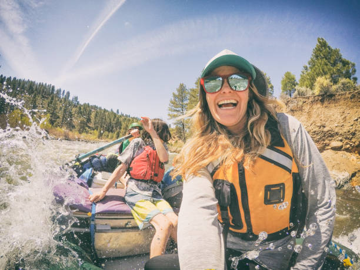

Overview
Purpose
Offer simplicity, speed and direct access to important wedding, graduation, birth and food memories.
Audience
we offer the best photography service in the region, for weddings, birthdays, graduations and we offer packages for the food services area.
Branding
Website Logo
Style Guide
Color Palette
Palette URL: https://coolors.co/1b1b1b-ffffff-f3f2f2-bac2be| Primary | Secondary | Accent 1 | Accent 2 |
|---|---|---|---|
| [1B1B1B] | [FFFFFF] | [F3F2F2] | [#BAC2BE] |
Typography
Heading Font: Abril Fatface
Paragraph Font: Lato
Normal paragraph example
life consists of memories, and you can let us capture those memories through our professionalism.
Colored paragraph example
We offer visual impact, lighting and we help you with the poses so that you look incredible when leaving those memories written in a photo
Navigation
Site Map
Content
Home page
Have you ever wondered what it would be like to have a virtual photo gallery where you can store and relive all your favorite moments with just a click? Podak Photogray is the perfect solution for you! With Podak Photogray, you will never have to worry about losing or damaging your most precious photos. With our cloud storage service, your photos will be safe and always available, anytime and anywhere. But that's not all Podak Photogray has to offer. Our website has a user-friendly and easy-to-use interface, which means you can organize and customize your photo gallery according to your needs and preferences. Do you want to create specific albums for special events? Or maybe you want to organize your photos by date or location? With Podak Photogray, anything is possible! Our website also has an advanced search function, which means you can easily find any photo you are looking for. Simply enter a keyword or specific date, and Podak Photogray will display all photos that match your search. In addition, Podak Photogray allows you to share your photos with friends and family around the world. Want to send a specific photo to a friend? Simply share the direct link to the photo and your friend can view it instantly. But best of all, Podak Photogray is completely safe and secure. Our website uses the highest security standards to ensure that your photos are protected against any kind of threat. Why should you choose Podak Photogray over other online photo storage services? Because we strive to provide you with an exceptional user experience. From our easy-to-use interface to our advanced search function, everything on our website is designed to make your life easier. In addition, our customer support team is available 24 hours a day, 7 days a week to assist you with any issues you may have. Whether you need help uploading your photos or organizing your gallery, our team is here to assist you every step of the way. In summary, if you are looking for a safe, easy, and convenient way to store your photos and relive your favorite moments, then Podak Photogray is the place for you! Visit our website today and discover everything we have to offer.
Images for the Home page

Gallery
Podak Photography is a photography company that offers a photo gallery for users to accompany their most memorable memories through photos. The gallery is a wonderful way to preserve life's most important moments and have them on hand to relive at any time. Podak Photography's gallery offers a wide variety of photos from different events and occasions. From weddings and birthdays to graduations and baptisms, users can find photos from all stages of life. Additionally, the gallery is regularly updated with new photos so that users can discover new images and add them to their collection. Podak Photography's gallery is not only a way to preserve memories, but also a way to share them. Users can share photos with friends and family through social media and other means. Additionally, they can print photos and have them at home as a tangible way to remember special moments. Another advantage of Podak Photography's gallery is that it is easy to use. Users can navigate the gallery and find the photos they are looking for easily thanks to an efficient organization system. They can also add photos to their personal collection and create customized albums to keep everything organized. In summary, Podak Photography's photo gallery is a wonderful way to accompany the most memorable memories through photos. It offers a wide variety of images from different events and occasions, is easy to use, and allows users to share and preserve their special moments forever.
Images for the Gallery 
About us
Podak Photography is a company dedicated to simplifying the lives of photographers and creating memorable experiences for users. The company recognizes that photography is an invaluable tool for capturing and preserving special moments, and seeks to provide solutions that facilitate this process for both photographers and end-users alike. For photographers, Podak Photography offers a suite of tools and solutions designed to streamline their workflow, allowing them to focus on their creative vision and the quality of their work. The platform offers a range of features, including organization and management tools, client tracking capabilities, and personalized gallery creation. Additionally, the company also operates an online store that enables photographers to sell their images and photographic products. For end-users, Podak Photography endeavors to create unforgettable experiences through the power of photography. The company's photo gallery is not only a means of preserving cherished memories, but also a medium through which to relive and share those memories with friends and family. Furthermore, Podak Photography also offers professional photography services for events and special occasions, ensuring that each significant moment is captured with creativity and professionalism. Overall, Podak Photography's mission is to simplify the lives of photographers and create enduring, memorable experiences for users. By providing practical and efficient solutions for photographers, the company enables them to focus on their creative work. For users, Podak Photography delivers a unique and personalized approach to photography, ensuring that every special moment is captured in a way that is both creative and professional.

Wireframes
Create three wireframes for your site. One for each page and list them here
Home
the main contain a photo and descriptions about what Podak Photography do.
About Us

Gallery